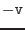
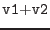
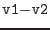
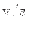
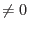
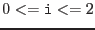
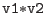

| description | symbol/name | type | comment |
| vector construction | vector(x, y, z) | vector | x/y/z can be arithmetic expressions |
| unit vector construction | unitvector(x, y, z) | vector | norm(unitvector(x, y, z))==1 |
| construction sky vector in J2000 reference frame | skyvector(ra, dec) | vector | ra/dec Right Ascension/Declination in rad |
| unary minus |  | vector | v vector |
| vector addition |  | vector | v1/v2 vectors |
| vector subtraction |  | vector | v1/v2 vectors |
| multiplication with scalar | vector | v vector, s arithmetic expression | |
| division by scalar |  | vector | v vector, s arithmetic expression  |
| cross product | cross(v1, v2) | vector | v1/v2 vectors |
| vector component | v[i] | scalar |  |
| vector norm | norm(v) | scalar | equivalent to sqrt(v[0]**2+v[1]**2+v[2]**2) |
| scalar product |  | scalar | equivalent to v1[0]*v2[0]+v1[1]*v2[1]+v1[2]*v2[2] |